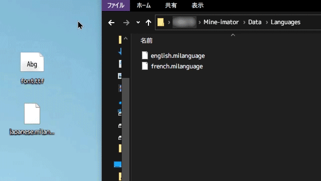

Mine-imatorを日本語化にする
導入方法
1.下にあるボタンを押してファイルデータをダウンロードします。
save_alt ダウンロード日本語フォントも用意してください。Mine-imatorで使われているフォントは日本語に対応してないので、日本語対応のフォントファイルに置き換える必要があります。
2.Mine-imatorのインストールフォルダを開きます。
デフォルトのインストール先はC:\Users\[ユーザー名]\Mine-imatorになります。
デスクトップにあるMine-imatorを右クリック、[ファイルの場所を開く]で移動することも可能。
3.フォントと日本語ファイルをData\Languagesの中に入れます。

4.Mine-imatorのsettings設定でInterfaceを開き、Font: Defaultの下のfolderをクリックして日本語フォントに切り替えます。
5.さらに下のfolderをクリックしてjapanese.milanguageに切り替えます。
注意事項
●当サイトで配布するファイルデータにつきましては、個人で行った翻訳となります。正式なデベロッパーとは関係ありません。
●ブロック名などはJava版に合わせて翻訳してます。はみ出し防止のため、一部のカタカナは半角ｶﾀｶﾅに変換してます。
●日本語ファイルデータの使用は個人利用に限ります。二次配布等は禁止です。
●当サイトに掲載された内容を用いて行った行為による損害等の一切の責任を負いかねますのでご了承ください。
●今後新しいアップデートに対応するかどうかは気分となります。一人でほとんどの作業をしていますので、今後のアップデートについては未定となります。
© 2020 kuadr0